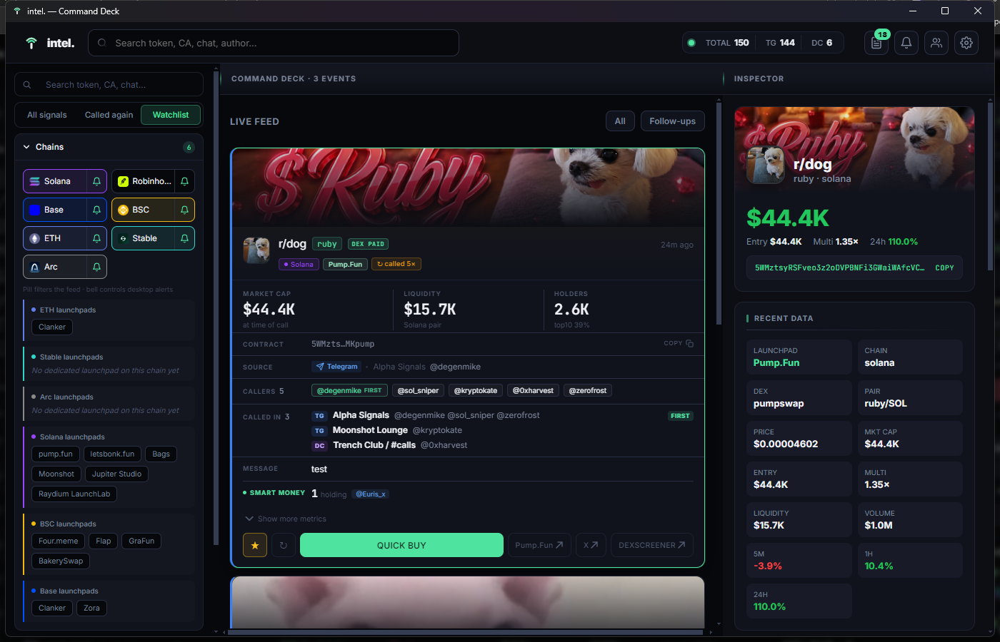

Stop watching the chats.
The calls come to you.
You're in twenty rooms and you can read one. intel. reads them for you — scanner bots dropped, the same person posting five times counted once — and pushes what survives to your desktop, enriched. Then you go do something else.

Unretouched capture of the Windows build. Chat names and callers are demo data.
The call you missed was on screen.
In a window you weren't looking at.
You're outnumbered, not slow
Twenty rooms, one set of eyes. Whichever nineteen you aren't reading is where it lands.
"Called 7×" is usually a lie
One person, and six scanner bots reposting the same contract seconds later. The count measures reach, not agreement.
Sitting in chats is the trap
It's the least valuable thing you do all day. It's also the thing you can't stop doing.
It fills itself in
while you're reading it.
Market data the instant it fires. Then DEX-paid resolves, artwork loads, holders arrive, and the known wallets still holding get named. Measured at 50–460 ms behind the alert.
- 1Reads your rooms. Signs into your own Telegram and Discord sessions and watches every channel you pick.
- 2Drops the noise. Scanner bots out. One human, one call — checked before the mention is recorded.
- 3Enriches what survives. DexScreener, RugCheck and GMGN. Market cap frozen at the moment of the call.
- 4Puts it on your desktop. And then leaves you alone.
Watch a call spread
across both platforms.
It hit one Telegram group. Then a second. Then a Discord server you also watch. Every room, who called it there, in order — and who was first. Two people calling it in one server is one room with two names, not two identical rows.
That second room is the signal. You saw all three without opening any of them.
Numbers from a machine
actually running it.
Not a spec sheet. This is what one account reached and what one store of 500 tokens looked like — yours will differ.
From chat noise
to one readable card.
Every mechanism below is something you can check in the running app. Nothing here is a category name standing in for a feature.
Every room, one screen
Telegram groups and Discord servers — whole servers or single channels — collapsed into one feed you didn't have to read.
One human, one call
Scanner bots dropped outright. The same person posting five times counts once. "Called 3×" means three people, and the card names them.
The entry is frozen
Market cap captured at the moment of the call, so the multiplier measures the call — not the chart drifting since.
Who's still in it
KOL and smart-money wallets holding a live position. Not everyone who ever traded it and already sold.
It admits what it doesn't know
No safety provider on that chain? It says so. A missing score never renders as a
passing one — you get unknown, not a green tick.
Your callers, scored
Median multiple and win rate per caller, computed only over calls with a real measured outcome — and it tells you the coverage rather than padding it.
You decide what interrupts
The chain pill filters the feed. The bell controls the desktop. Mute Solana and still browse it — two jobs, two switches.
Watchlist re-alerts
Star a token and it keeps talking to you: called again, re-scanned, smart money buying. Labelled, so a re-alert never looks like a fresh call.
Local by design
Sessions and history sit in %APPDATA%. No account, no server, no analytics,
no auto-update. There is no backend to leak.
It says unknown a lot.
That's the point.
Every competitor overstates. Here is what this one will not do, stated before you download it rather than discovered afterwards.
You, versus the desk.
| Sitting in the chats | intel. | |
|---|---|---|
| Rooms readable at once | 1 | all of them |
| Scanner bots filtered | by eye | automatically |
| Entry price recorded | from memory | frozen at the call |
| Cross-platform spread | invisible | every room, in order |
| Needs you at the screen | yes | no |
Two ways to run it.
Connect Telegram and Discord in the app's Settings screen — nothing to hand-edit, and nothing leaves your machine.
Installer
intel-Command-Deck-Setup.exeStandard wizard, desktop and Start-menu shortcuts. Installs per user — no admin rights, no UAC prompt. Uninstalling keeps your credentials and history.
Portable
intel-Command-Deck-Portable.exeSingle file, runs anywhere, leaves nothing behind. Unpacks on each launch, so it starts a little slower. Good for a USB stick.
First launch takes about 14 seconds. The build is unsigned, so SmartScreen will warn once — More info → Run anyway, or build it yourself from source. It's MIT licensed.
Straight answers.
Does it touch my wallet?
No, and it cannot. There is no wallet integration, no keys, no signing, and no trading. Quick buy opens a link in your browser. That's the entire extent of it.
Isn't a Discord user token against their terms?
Yes. A user token logs in as your account, and Discord's terms prohibit it. That's stated in the app before you paste one, and in the README. It's your decision, and the token never leaves your machine. Telegram uses an official API session and has no such issue.
What if I don't have a GMGN key?
It still runs. DexScreener market data on every chain and RugCheck safety on Solana are keyless. You lose EVM safety checks, EVM holder counts, some artwork, and KOL/smart-money data — and the UI tells you which is missing rather than rendering a blank as a pass.
Does it tell me what to buy?
No, and nothing can. It surfaces information: who called it, where, when, what the market data says, and what it doesn't know. The decision is entirely yours.
Where does my data go?
Nowhere. No account, no server, no analytics, no auto-update. Sessions and history sit in
%APPDATA%. Outbound traffic goes only to the data providers and to Telegram and
Discord themselves.
Why does Windows warn me about the download?
The binary isn't code-signed — a certificate is a few hundred a year. Click More info → Run anyway, or build it from source. The repo is public and MIT-licensed.